The Oertha Armorial
Awards of Arms (Simple Order of Precedence)
Part II
Updated 12/18/25
Anyone with the following:
has no arms registered with the College of Arms
Most of the information herein is based on the
I will insert Armigers who are not at this time listed
This will facilitate repairs to the O.P. while recognizing Awards given.
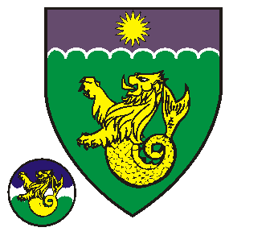
Sepember 13, AS XV (1980) by Radnor & Esmirelda 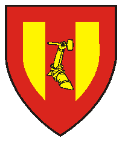
December 5, AS XVI (1981) by Steingrim & Lenora 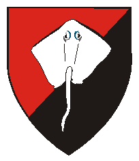
August 21, AS XVII (1982) by James & Verena 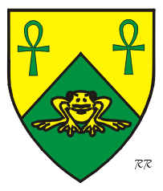
January 8, AS XVII (1983) by Paul & Rowena 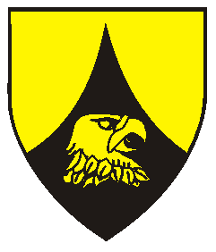
January 8, AS XVII (1983) by Paul & Rowena 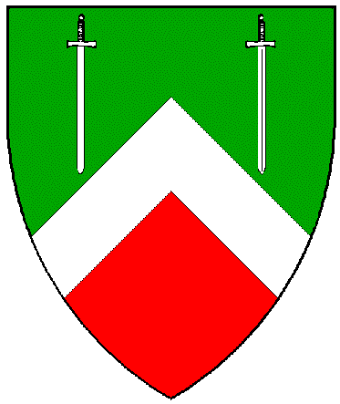
July 10, AS XVIII (1983) by Radnor & Esmirelda 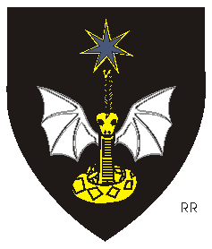
July 10, AS XVIII (1983) by Radnor & Esmirelda 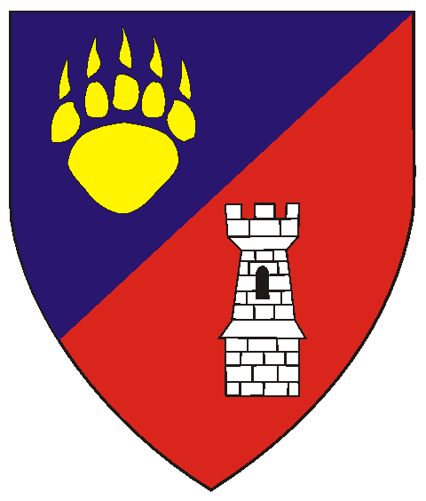 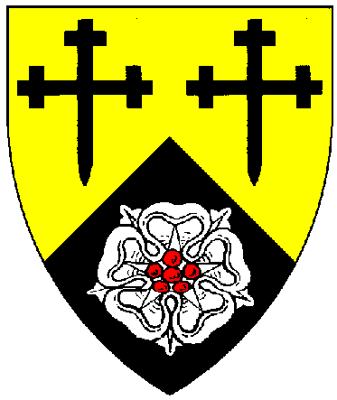
July 14, AS XIX (1984) by Ronald & Dierdriana
July 14, AS XIX (1984) by Ronald & Dierdriana 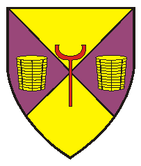
March 2, AS XIX (1985) by Kylson & Anne 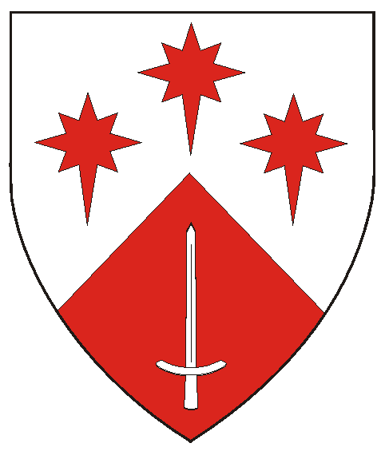
March 2, AS XIX (1985) by Kylson & Anne 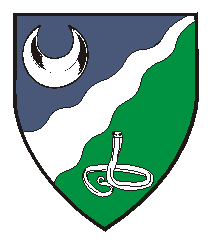
March 2, AS XIX (1985) by Kylson & Anne 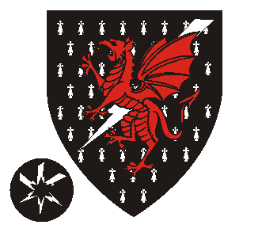
March 2, AS XIX (1985) by Kylson & Anne 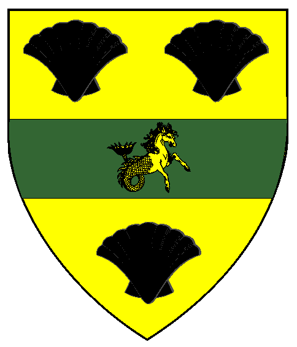
Sepember 21, AS XX (1985) by Gaius & Kathrine 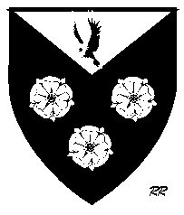
January 18, AS XX (1986) by Donnan & Kareina 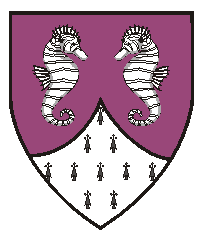
January 18, AS XX (1986) by Donnan & Kareina 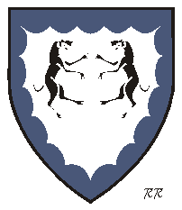
June 28, AS XXI (1986) by Eric & Erlyn 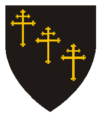
June 28, AS XXI (1986) by Eric & Erlyn 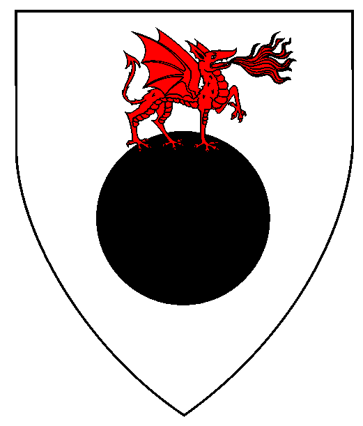 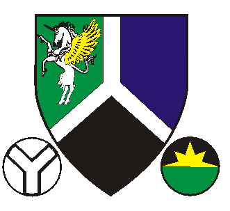
December 6, AS XXI (1986) by Kylson & Anne 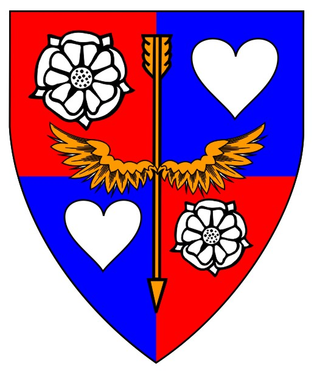
December 6, AS XXI (1986) by Kylson & Anne 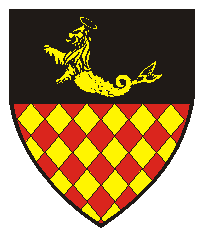
January 23, AS XXII (1988) by Jade & Anastacia 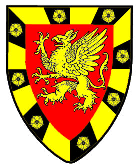
January 23, AS XXII (1988) by Jade & Anastacia 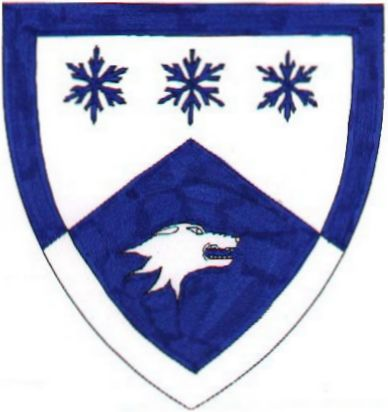 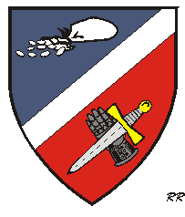
March 1, AS XXIV (1989) by Phelan & Vanora 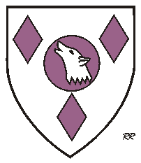
May 14, AS XXIV (1989) by Phelan & Vanora 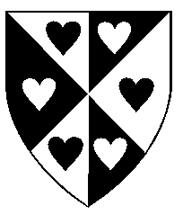
June 9, AS XXV (1990) by Georg & Katarzina 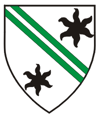
July 22, AS XXV (1990) by Phelan & Vanora 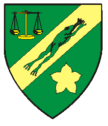
January 26, AS XXV (1991) by Phelan & Vanora 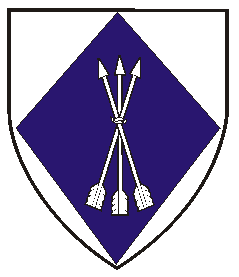
January 26, AS XXV (1991) by Phelan & Vanora 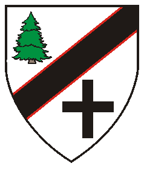
January 26, AS XXV (1991) by Phelan & Vanora 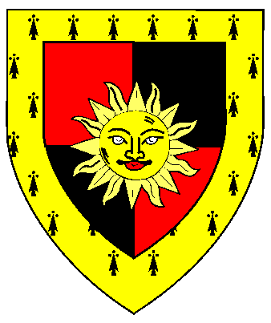
January 27, AS XXV (1991) by Phelan & Vanora 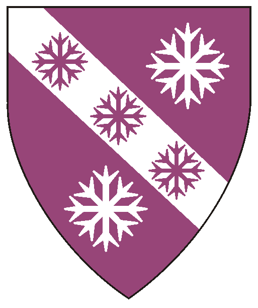 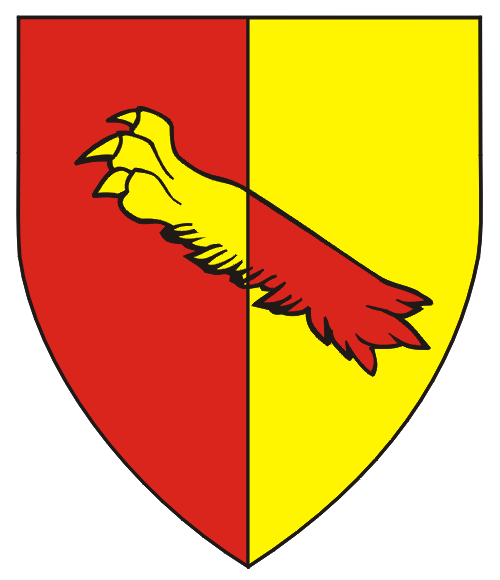
To the Patents (Knights, Laurels, Pelicans)
To the Grants of Arms, Leaves of Achievement, and Court Baronies : Part I
Awards of Arms Part II
To the AA's Part V Page
To the AA's Part VI Page
To the AA's Part VII Page
Emblazons marked with "RR" involve artwork of Robert Rootes,

Blazons without visual shield/designs are in the works.
West Kingdom Order of Precedence,
or the O.P.'s of other Kingdoms.
Contact me to forward corrections or with name/spelling preferences.
in the West OP in the following manner:
AWARDS OF ARMS
Jenny Crumb
May 13, AS XIII (1978) by Gregory & Bevin
Kate Camarius
May 13, AS XIII (1978) by Gregory & Bevin
Wad Tyler
May 13, AS XIII (1978) by Gregory & Bevin
Dio Aristar
Sepember 13, AS XV (1980) by Radnor & Esmirelda
Rutker von Schiedam
Vert, a sea-lion erect Or, and on a chief engrailed azure, fimbriated argent, a sun Or.
BADGE: Per fess azure and vert, a fess engrailed argent, overall a sea-lion erect Or.
Nan Carramore
November 1, AS XV (1980) by Trimaris
Faiana ni Kenneth nah Dulioscarn
July 12, AS XVI (1981) by William & Andrea
Tanji de Mounteloup
December 5, AS XVI (1981) by Steingrim & Lenora
Dirdrianna Elspeth of Mindanell
December 5, AS XVI (1981) by Steingrim & Lenora
Rodbert Cospatrick
(Deceased)
Or, on a pale gules a sinister armored arm embowed to sinister
maintaining a hammer Or, a bordure gules.
Bernadette de Faireskiie
January 23, AS XVI (1982) by Radnor & Esmirelda
Leandra Featheringill
January 23, AS XVI (1982) by Radnor & Esmirelda
Adrian of Longacre
Per bend sinister gules and sable, a stingray tergiant displayed argent.
Jonathan of Starfyre
January 8, AS XVII (1983) by Paul & Rowena
Kara MacKenzie (aka Kara Nina)
Per chevron vert and Or, two ankhs and a frog sejant affronté counterchanged.
Sean of Eagles Rest
Sable, chapé ployé, an eagle's head erased to sinister Or.
Branwyn Rhaeadra Ustafell ap Cadwig
March 19, AS XVII (1983) by Thomas & Trista
Etta Lachehans
March 19, AS XVII (1983) by Thomas & Trista
Bjorn of Wolf's Hold
Per chevron vert and gules, a chevron and in chief two swords inverted argent.
Irone of the Blue Star
Sable, a python displayed Or, winged argent,
issuant from the head a plume,
in chief a mullet of seven points Or, voided azure.
Martha Aardvarkkeeper
July 10, AS XVIII (1983) by Radnor & Esmirelda
Raonaild Ruadh
July 10, AS XVIII (1983) by Radnor & Esmirelda
Tara de Frambois
July 10, AS XVIII (1983) by Radnor & Esmirelda
Taryna Kalysta
July 10, AS XVIII (1983) by Radnor & Esmirelda
Edmund de Montfort of Highkeep
Per bend sinister azure and gules, a bear's paw print Or and a tower argent.
September?, AS XVIII (1984) by ?
Andrew the Pious
January 28, AS XVIII (1984) by William & Joanne
Denise de Monteaux
January 28, AS XVIII (1984) by William & Joanne
Ambyth de Fontaine
January 28, A.S. XVIII (1984), William & Joanne
Dolphin of Caid (Service) November 15, 1984
Draco Solorb
(deceased)
April 29, AS XVIII (1984) by William & Joanne
Shapur Abblhassan Husain
April 29, AS XVIII (1984) by William & Joanne
Lazerina de Montfort van Halen
May 5, AS XIX (1984) by William & Joanne
Armanna Goldenwood
Per chevron Or and sable, two crosses crosslet fitchy sable and a rose argent seeded gules
Faustine Elfina SeaFyre
July 14, AS XIX (1984) by Ronald & Dierdriana
Griffinus Silversun
July 14, AS XIX (1984) by Ronald & Dierdriana
Myrddyn Brandeall
Argent, a chevron embattled gules between three towers sable.
Todd the Foxx
July 14, AS XIX (1984) by Ronald & Dierdriana
Karag the Perverse
July 14, AS XIX (1984) by Ronald & Dierdriana
Kuba the Everusefull
January 19, AS XIX (1985) by Kylson & Anne
Alina Mika Kobyakovna
Per saltire Or and purpure,
a handgun rest gules between two baskets Or.
Conal MacBell
Per chevron abased argent and gules,
three compass stars, elongated to base,
one and two, gules and a sword argent, hilted gules.
Elspeth Efura of Heidi byr'Moors
March 2, AS XIX (1985) by Kylson & Anne
Isadora Athinai
(aka Hamadryad of Earngyld)
Per bend sinister azure and vert,
a pile inverted bendwise sinister wavy
between a crescent argent and a serpent erect,
tail nowed, argent, marked sable.
Mark Louis Jacobs
Counter-ermine, a lightning flash bendwise sinister argent,
overall a dragon rampant gules.
BADGE: Sable, three lightning flashes crossed in estoile argent,
thereon a mullet of six points sable.
for House de Sithia
Ebba la Rousse (aka Laibrook of Briarwood)
Or, on a fess vert between three escallops inverted sable, a seahorse naiant to sinister Or.
June 29, AS XX (1985) by Kylson & Anne
Thalin Stonefriend
July 13, AS XX (1985) by Kylson & Anne
Oweneth Weavewell

Quarterly sable and vert, a dragon couchant in annulo,
its dexter foreclaw clutching its tail, argent.
Istri de los Osos
January 18, AS XX (1986) by Donnan & Kareina
Katherine of the Black Eagles
(aka Yekaterina Chornyk Orlov, Katrina la Rourke)
Sable, three roses, on a chief triangular argent,
an eagle striking sable.
Seanan the Beleaguered
Purpure, two natural seahorses erect respectant argent
and a point pointed ermine.
Swein the Well-Scarred
February 15, AS XX (1986) in Ansteorra
Aelfwynn de Montfort of Twoneam
June 28, AS XXI (1986) by Eric & Erlyn
Guenever of Ravenscroft
Argent, two Great Danes combattant sable
within a bordure invected vert.
Keiri Rhianna ab Llynclys
June 28, AS XXI (1986) by Eric & Erlyn
Llywellyn ab Tallesson
June 28, AS XXI (1986) by Eric & Erlyn
Tucken Ashford
Sable, three patriarchal crosses botonny in bend Or
Rafe Loufer
(Deceased)
July 19, AS XXI (1986) by Eric & Erlyn
Eliana Geveive d'Andance
July 19, AS XXI (1986) by Eric & Erlyn
Sylika
July 19, AS XXI (1986) by Eric & Erlyn
Tamar of Wolfhaven
July 19, AS XXI (1986) by Eric & Erlyn
Johanna von Hagen
(Deceased)
December 6, AS XXI (1986) by Kylson & Anne
Katrina the Prude
December 6, AS XXI (1986) by Kylson & Anne
Lurana Dolfina
Argent, in pale a dragon passant contourny breathing flames gules atop an ogress.
December 6, AS XXI (1986) by Kylson & Anne
Mathias Sicco von Hagen
Per pall inverted vert, azure, and sable,
a pall inverted and in dexter chief a unicorn salient argent, winged Or.
BADGE: Argent, a pall voided sable.
BADGE: Per fess sable and vert,
issuant from the line of division a demi-compass-star Or.
Sheea Kyree Tahn
December 6, AS XXI (1986) by Kylson & Anne
Talbott Stormeagle
Quarterly gules and azure, an arrow palewise conjoined
to a pair of wings displayed inverted Or
between in bend two roses and in bend sinister two hearts argent.
Nigel Mac Neal
January 17, AS XXI (1987) by Kylson & Anne
Brownthorne
January 17, AS XXI (1987) by Kylson & Anne
Lorana
January 17, AS XXI (1987) by Kylson & Anne
Warren Soulstealer
January 18, AS XXI (1987) by Kylson & Anne
Charee of Henforde
July 25, AS XXII (1987) by Brendan & Aryana
Dacey Cospatrick
July 25, AS XXII (1987) by Jade & Anastacia
Gregorio Antonio Cobianchi de Piacenza
January 23, AS XXII (1988) by Jade & Anastacia
Lyell Leslie of Inian Isle
Per fess sable and lozengy gules and Or, in chief a sea-lion naiant, haloed Or.
William Percival
Gules, a griffin segreant Or, a bordure compony Or and sable semy of roses Or.
Patrick Ostannaugh
April 10, AS XXII (1988) by Brendan & Aryana
Donal MacIan
July 16, AS XXIII (1988) by Brendan & Aryana
Aaron of Wolfshead
July 25, AS XXIII (1988) by Brendan & Aryana
Vlasta [of Earngyld]
January 21, AS XXIII (1989) by Kylson & Anne
Gregory de Montfort
Per chevron argent and azure, three snowflakes in fess and a wolf's head contourney erased within a bordure counterchanged.
March 1, AS XXIV (1989) by Phelan & Vanora
Hilaria MacArthur
March 1, AS XXIV (1989) by Phelan & Vanora
Morgan of Winterskeep
Per bend sinister azure and gules,
a bend sinister argent between a purse fesswise,
spilling coins to dexter, and a gauntlet bendwise appaumy Or,
its palm surmounted by a dagger bendwise sinister inverted proper.
Glenna the Misplaced
May 6, AS XXIV (1989) by Phelan & Vanora
Mary of the White Wolves
Argent, on a golpe between three lozenges purpure,
a wolf's head, erased and ululant, argent.
Brian Michael MacBairn
(Deceased)
May 21, AS XXIV (1989) by Phelan & Vanora
Rouland MacAidan
November 1, AS XXIV (1989) by * Unknown *
Trenton Evermear
December 15, AS XXIV (1989) by Brendan & Aryana
Colin MacBeolain
December 16, AS XXIV (1989) by * Unknown *
Diana of the Silver Mists
December 16, AS XXIV (1989) by * Unknown *
Faythleen MacAlan
May 5, AS XXV (1990) by Georg & Katarzina
Jowayne
May 5, AS XXV (1990) by Georg & Katarzina
Rachael d'Amour
Per pale and per saltire argent and sable, six hearts in annulo counterchanged.
Judith Fiona Mac Kiernan (aka Judith Fiona MacKiernan)
Argent, two bendlets vert between two estoiles sable.
Duncan Bek Angus Mac Drake of Clan Barclay

Award of Arms September 8, A.S. XXVI (1990) Comar & Lisa of Midrealm
Eirikr Tryggvason
October 6, AS XXV (1990) by Jade & Shaheena
Godfrey ap Caradoc
October 13, AS XXV (1990) by Phelan & Vanora
Julien Caitlin Becke
October 13, AS XXV (1990) by Phelan & Vanora
Sirenna de la Cienega Cogelado
(Deceased)
October 13, AS XXV (1990) by Phelan & Vanora
Brigit de Montfort
(Deceased)
Vert, on a bend sinister between a balance and a cinquefoil Or,
a frog courant to sinister vert.
Gilliana of Bedlam Wood
January 26, AS XXV (1991) by Phelan & Vanora
Logray de Montfort
January 26, AS XXV (1991) by Phelan & Vanora
Rannulf of Arrow's Keep
Azure, vetu, a sheaf of three arrows inverted argent.
Sigismund von Kiefertal
Argent, a bend sinister sable cotised gules
between a pine tree couped proper and a cross couped sable.
Blackheart
January 27, AS XXV (1991) by Phelan & Vanora
Gillian FitzGilbert
Quarterly gules and sable, a sun in splendor Or,
a bordure erminois.
Mora of Shade's Wood Keep
January 27, AS XXV (1991) by Phelan & Vanora
Kyliae
May 4, AS XXVI (1991) by Georg & Katarzina
Ingrid of the Blue Snows
(aka Selena O'Brian, Selene O'Brian)
Purpure, on a bend between two snowflakes argent, three snowflakes purpure.
June 22, AS XXVI (1991) by Georg & Katarzina
Aelric Wrathchilde
October 12, AS XXVI (1991) by Donnan & Callista
Shastaine de Montfort [of Dragon's Lair]
October 12, AS XXVI (1991) by Donnan & Callista
Teleri Grwydryn
October 12, AS XXVI (1991) by Donnan & Callista
Angus McDougal
January 19, AS XXVI (1992) by * Unknown *
Christina Landswalker of Penrose
Per pale gules and Or, a lion's jambe bendwise counterchanged.
December 26, AS XXVI (1991)
Kingdom of the Middle (Northshield)

BADGE: Per pale Or and gules, a lion's jamb bendwise sinister
sustaining a Latin cross bendwise, counterchanged.
Starting January, AS XXXV (2002 to 2010)
Starting January, AS XLIV (2010 to December, LIV (2019)
Starting January, AS LIV (2020 to Present
a member of the Canton Ynys Taltraeth.
Some artwork provided by owners of arms depicted.
Most artwork on these pages created with CorelDraw!3-9 by Khevron.